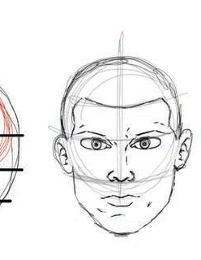

Therefore, you should practice drawing the human being, guided by the use of the shapes that you have learned.
Drawing a human being's head
To draw the shape of a human being's head, consider the following steps:
- Draw two overlapping circular shapes—one resembling a ball and the other shaped like a mango;
- Divide the shape you have drawn in to three parts using lines;
- Draw line to indicate the position of the ears, eyes, nose, and mouth; and
- Then, draw the ears, eyes, nose, and mouth following the guidelines you created in step three. Figure 6 shows steps on how to use circular shapes to draw human being's head.
 1
1 2
2 3
3
4
Activity 4
Draw a human being's head using circular shapes
Drawing human being's hands
Drawing the human being's hands, start by drawing one hand and finalising by drawing another hand. Draw two cylinders connected by a circle shape to get the shape of one complete hand. Repeat this step to draw the shape of the second hand as shown in Figure 7.